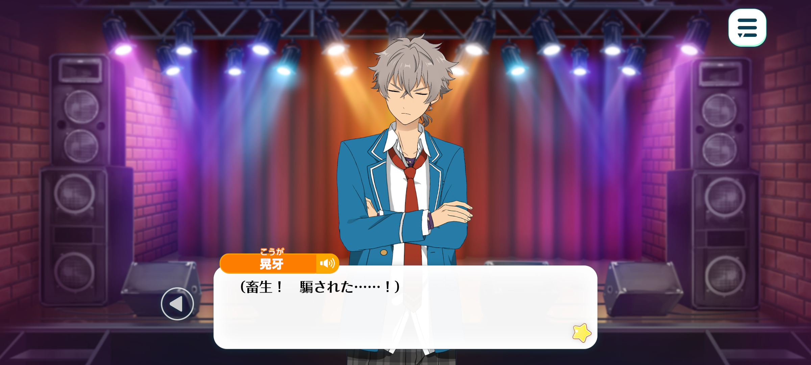
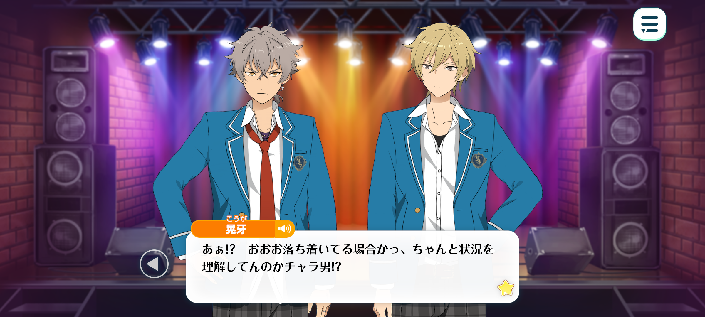
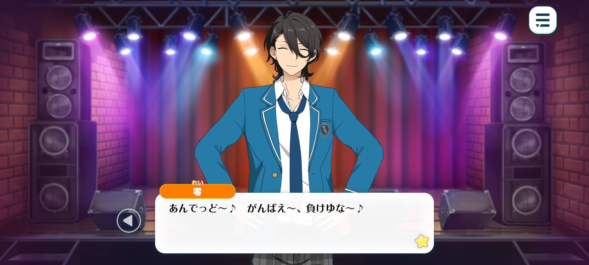

PSYCHOBREAK — Chapter 12


Time: The next day. The day of the Flashback live
Location: In the livehouse near Yumenosaki

Koga: ♪〜♪〜♪
(For fuck’s sake! He’s tricked us…!)
(What the hell happened to Sakuma-senpai? Yesterday he was actin’ all cool and promised he’d “do his best tomorrow”!? )
(And now he’s not even here!)
(We've put so much effort into promoting this show that practically everyone knows when it's supposed to start! And now we've had to go on without him!)
Adonis: …
Kaoru: …
Koga: (Grrr? There's nothing Adonis can do about it. Even though he's built like a brick shithouse, he's still a quiet guy!)
(It's probably his first live, so he's overwhelmed and his mind's gone completely blank!)
(But Hakaze-senpai— I mean, that shallow playboy! He's supposed to be our senpai, yet he's just standing there looking all flustered, like some total beginner!?)
(So much for “I’m a reliable guy”?! Fuckin’ liar!)
(This is bad, we all fuckin’ suck! UNDEAD is the worst band ever!)
(Gah, what was I thinking!? Of course a band that's barely had any time to rehearse, or even get anything else sorted out, isn't just gonna step onstage and blow everyone away!)
(So this was always gonna happen. This isn't some manga where a miracle's gonna come along and save us at the last minute~!)
(Fuck, shit, this is so embarrasin’!)
(If we end up makin’ a complete mess of things even with Sakuma-senpai's help, then obviously it's my fault for being so weak and immature!
(I'll be the one who ruins his otherwise flawless record!)
(That’s why I can’t let this happen! Someone’s gotta do somethin’! I’ve got to do somethin’...!)

Kaoru: Calm down~, Wan-chan. Relax, relaxxx ♪
Koga: HaaH!? I-I-If you're so damn calm, then that means you haven't got a fucking clue what's going on!?
Kaoru: Panicking isn't going to change anything, 'kay?
I'm sorry. I'm a pretty pathetic excuse for a senpai, aren't I...? As you can probably tell, this is my first time performing on stage.
Well, I suppose watching from the sidelines and actually standing up there yourself are two very different things.
I can't breathe properly. The lights are so bright, and it's so hot. I'm sweating, and I feel disgusting. I can't concentrate because my mind keeps wandering off to the most random, pointless things.
My heart feels like it's going haywire, and my blood isn't circulating properly.
If I don’t brace myself, I feel like my legs might just give out from under me… It’s scary, performing like this.
So this is what it's really like to perform on stage... I know it's ridiculously late to be figuring that out, but I'm finally experiencing it for myself.
Adonis: I feel the same way... I'm sorry, Oogami. I'm feeling rather nervous myself.
When I was younger, I sometimes performed little dances alongside my mother, who was a singer. But...
Back then, I was young, innocent, and unafraid, and I had my dependable mother by my side.
I was able to perform without deliberating about it, as if it was second nature. Maybe that was because I had my mother guiding me.
She was the one who made me shine. But now, I no longer have anyone to guide me like that.
I have to find my own way forward.
I'm so anxious, and I'm frightened... I feel like a child who's lost in the dark.
Koga: I see. Can’t I be your guidin’ light then?
...No good, huh? I guess it really won't work without Sakuma-senpai after all. I'm just not good enough...
Adonis: Speaking of Sakuma-senpai… I only just noticed, but isn’t he down there?
Koga: Huh?
Adonis: After talking to you two, I managed to calm down and take a proper look around... Look. He's in the audience, happily waving a penlight.

Rei: Kyah~☆
UNDEAD~♪ Fight, fight, do your best~♪
Koga: I thought he wasn’t gonna show! The hell’s he doin’ down there!?
Adonis: I'm not sure. But he seems strangely pleased with himself.
Kaoru: Th-that's not fair, Sakuma-san! You're a member of UNDEAD too, aren't you?! Get up on stage and do your bit!
Rei: Ahaha! Yeah, yeah. Though I never expected to hear that from you, Hakaze-kun. You seemed like the least motivated of us all, and the one who felt the least attached to the group.
Kaoru: Okay whatever! Just hurry up! If you don't pull your weight and put on a proper performance, I'm not paying you, got it?!
Rei: Jeez, alright~. What am I gonna do with you, huh, Nob*ta-kun… Without your mummy here you get all anxious ‘n start cryin’ dontcha? Little baby ♪ [1]
Kaoru: ...You probably don't even realise this, but that's a sore subject for me, okay?
Don’t make fun of me too much.
—And I'm not some pathetic crybaby any more.
♪〜♪〜♪
- Nobita-kun is a doraemon character. He's depicted as lazy, doesn’t like critical thinking, acts childishly, and is pretty dense. Despite this, sometimes he has some redeeming qualities, like being kind and risking his life to save others. It's also implied that his poor grades are not because he’s stupid, but because he’s lazy.)